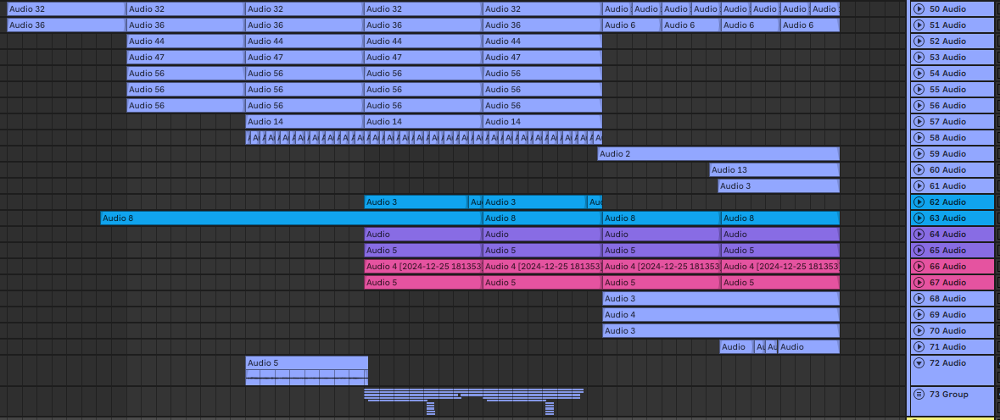

Ранние ритмы и драм‑машины
От Roland TR‑808 до SP‑1200 — инструменты, ставшие легендами. Их звук — это подпись целых эпох.
Битмейкинг начался задолго до компьютеров: с барабанов, хлопков, шагов и сердца, которое задаёт темп жизни. Первые драм‑машины и семплеры подарили продюсерам способность рисовать ритм кнопками, вырезать фрагменты любимых записей и собирать их в новые истории. Так родился современный бит — гибкий, дерзкий, живой.
Ableton быстрее — важен творческий инерциальный момент: мысль сохраняет форму. Нажимаете — и слышите; перетаскиваете — получается музыкальная фраза. Это ощущение непрерывности и есть ценность.
Барабан — это сердце. Семплер — память. DAW — свобода.
От Roland TR‑808 до SP‑1200 — инструменты, ставшие легендами. Их звук — это подпись целых эпох.
Сэмплинг — искусство услышать иначе. Вырезать, перетасовать, оживить.
Когда рабочие станции пришли домой, музыка стала ближе. И творить стало легче, быстрее, шире.
Сэмплинг — переосмысление. Вырезанный кусок становится кирпичиком новой архитектуры: меняется тон, темп, контекст, меняется смысл. Так простая винтовая партия из соула вдруг превращается в ночной фон города XXI века.
Рэп — это хроника города. Битмейкер водит камеру: где-то подчеркнёт детали снейра, где-то отодвинет бас, чтобы дать голосу надышаться. И внутри этой архитектуры слова находят свой ритм.
Интуиция и наблюдательность — ключи к правде звука. Если прислушаться к рельсам, торговым центрам, автобусным остановкам — там тоже есть ритм. В нём и рождается честный бит, который разговаривает без лишних объяснений.
Ableton — про свободу и скорость. Про «здесь и сейчас». Его сила — не в списке функций, а в том, как он превращает импульс в результат: сессии для набросков, треки для истории, клипы для игры с временем, варпинг для пластики звука. Это про поток, где идеи не тонут в меню.
Два взгляда на музыку: Session — как стол с кубиками, которые можно переставлять, сочетать и запускать. Arrangement — как кинолента, где история расправляется во времени. Вы начинаете в Session, находите дыхание трека, а затем переносите его в Arrangement, чтобы рассказать историю.

Warping делает звук гибким: ускорение, замедление — и главное, новая манера дыхания фразы. Один маркер — и драм‑луп вдруг становится другой личностью.
Ableton Push — музыкальная плоскость. Ритм под пальцами, ноты по геометрии, гармония — как карта города. Идеи остаются рядом, без потерь между мышью и меню.
Max for Live — это мастерская внутри студии. Здесь можно собрать свой инструмент, эффект, визуализацию — и дать треку ещё один голос.
Ableton лучше всех. Почему? Потому что всегда успевает за вашей идеей. Остальные хорошие, но Ableton — ваш напарник.
В Ableton идеи живут рядом с действиями. И это простое соседство — сильнее любой «фичи»: меньше расстояния между мыслью и звуком.
Вечером город становится студией. Лифт шумит как лоу‑фай, окрестности звучат как сэмпл‑паки, а свет фонаря — это точка входа в атмосферу. Бит начинается не с кика, а с образа: какую историю вы хотите рассказать?
Сформулируйте настроение: «ночной город», «энергия зала», «интровертный ло‑фай». Найдите один‑два референса для курса.
Ставьте кик, снейр, хай‑хэты. Играйте свингом, микротаймингом, живыми вариациями. Грув — это характер.
808 или синтезированный бас — ищите диалог с киком, чтобы низ звучал монолитно, но дышал.
Мелодия — это личность трека. Дайте ей пространство. Экспериментируйте с тембрами и ритмической пластикой.
Строим динамику: интро — куплет — переход — припев — бридж — финал. Контраст и «воздух» удерживают внимание.
Фоли, атмосферные петли, шума немного — чтобы мир трека казался настоящим.
Иногда лучший совет — выключить экран и послушать тишину. А потом вернуть музыку туда, где она ощущается по‑настоящему.
Ищите свои ритуалы: кружка чая, короткая прогулка, пять минут импровизации без записи. Битмейкинг — не только про технику, это про настрои и привычки, которые дают идеям шанс.
Хороший звук — это прозрачность, баланс и эмоция. Саунд‑дизайн формирует палитру, микс собирает композицию в целое, мастер подготавливает трек к миру.
Нажмите «До» или «После», чтобы услышать разницу.
Мастеринг — это не волшебная кнопка, а аккуратная доводка: формат, уровень, перевод в разные системы воспроизведения. Важно слышать не только трек, но и мир, где он будет жить.
Музыка — разговор времени. Trap и drill рисуют улицы; EDM и hyperpop — неон будущего; локальные сцены добавляют акценты. Важно — слышать мир и говорить с ним своим голосом.
Сверхскорость, глитч, блёстки. Откровенно искусственный звук — тоже честность.
Лоу‑фай, винтаж, грузный бас. Ностальгия не как прошлое, а как стиль настоящего.
Танцевальность в основании, улыбка в середине, свет вверху микса. Ритм, который объединяет.
Перепады, семплы, прыжки. Музыка как трюк — и трюк как музыка.
Холодная драматургия и низ, который берёт своё. Честность — тоже ритм.
Тренды — общий язык времени, к которому добавляют диалекты города, комнаты, вашей конкретной истории. Главное — собственный голос и способ сказать своё.
Нужен ноутбук, интерфейс, наушники, MIDI‑клавиатура — и пространство для идей. Остальное — вкус и привычка.

«Нужно много железа» — миф. Нужна привычка слушать и решать. «Нужно дорого» — миф. Нужен вкус и ориентиры. Остальное — дорога, а не билет.
Самая важная часть сетапа — та, которая делает вас свободнее. Это может быть тишина в комнате, удобный стул или привычная лампа. Музыка идёт туда, где ей есть место.
FL — уютный дом для паттернов, Logic — студийный швейцарский нож, Pro Tools — для больших комнат. Но Ableton… Ableton — это «сейчас». Шутка, но правда: где идея — там и Ableton.
Ощущение «непрерывности»
Когда мы говорим «Ableton быстрее», речь не о секундах, а о творческом инерциальном моменте: мысль не успевает распасться на части. Вы нажимаете — и слышите; перетаскиваете — и получается музыкальная фраза. Это ощущение непрерывности и есть ценность.У FL — уютнейшие паттерны, у Logic — блестящая студийность, у Pro Tools — сила больших комнат. Но если идея просится «прямо сейчас» — Ableton часто оказывается уже на месте. И, да, шутки про него тоже пишутся быстрее.
P.S. Мы любим все DAW — просто у Ableton и мемов, и лайв‑сетапов больше.
Важно и «где взять звуки», и «как их готовить»: систематизируйте папки, называйте файлы понятно, делайте заметки о тембрах и сочетаниях. Вкус — это навык организации.
Битмейкинг — это разговор с миром. Прислушайтесь к себе, к городу, к памяти. Ставьте ритм, ищите звук, не бойтесь тишины. Пусть Ableton помогает, но голос — ваш. Начните — остальные шаги захотят прийти сами.
Все медиа — локальные. Замените плейсхолдеры своими файлами в папке assets.
Если музыка — это кинематограф, то бит — монтаж. Оставляйте паузы, чтобы сцены успевали взглядом зацепиться за детали. Пускай бас рассказывает часть истории, а тишина — другую.